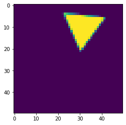
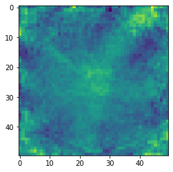

<!DOCTYPE html>

<html xmlns="http://www.w3.org/1999/xhtml">
  <head>
    <meta charset="utf-8" />
    <title>Varia &#8212; AI primer</title>
    <link rel="stylesheet" href="https://cdnjs.cloudflare.com/ajax/libs/font-awesome/5.11.2/css/all.min.css" integrity="sha384-KA6wR/X5RY4zFAHpv/CnoG2UW1uogYfdnP67Uv7eULvTveboZJg0qUpmJZb5VqzN" crossorigin="anonymous">
    <link href="_static/css/index.css" rel="stylesheet">
    <link rel="stylesheet" href="_static/sphinx-book-theme.css" type="text/css" />
    <link rel="stylesheet" href="_static/pygments.css" type="text/css" />
    <link rel="stylesheet" type="text/css" href="_static/togglebutton.css" />
    <link rel="stylesheet" type="text/css" href="_static/copybutton.css" />
    <link rel="stylesheet" type="text/css" href="_static/mystnb.css" />
    <link rel="stylesheet" type="text/css" href="_static/sphinx-thebe.css" />
    <link rel="stylesheet" type="text/css" href="_static/jupyter-sphinx.css" />
    <script id="documentation_options" data-url_root="./" src="_static/documentation_options.js"></script>
    <script src="_static/sphinx-book-theme.js"></script>
    <script src="_static/jquery.js"></script>
    <script src="_static/underscore.js"></script>
    <script src="_static/doctools.js"></script>
    <script src="_static/language_data.js"></script>
    <script src="_static/togglebutton.js"></script>
    <script src="_static/clipboard.min.js"></script>
    <script src="_static/copybutton.js"></script>
    <script src="_static/mystnb.js"></script>
    <script src="_static/sphinx-book-theme.js"></script>
    <script >var togglebuttonSelector = '.toggle, .admonition.dropdown, .tag_hide_input div.cell_input, .tag_hide-input div.cell_input, .tag_hide_output div.cell_output, .tag_hide-output div.cell_output, .tag_hide_cell.cell, .tag_hide-cell.cell';</script>
    <script src="https://cdnjs.cloudflare.com/ajax/libs/require.js/2.3.4/require.min.js"></script>
    <script src="https://unpkg.com/@jupyter-widgets/html-manager@^0.18.0/dist/embed-amd.js"></script>
    <script async="async" src="https://cdnjs.cloudflare.com/ajax/libs/mathjax/2.7.5/latest.js?config=TeX-AMS-MML_HTMLorMML"></script>
    <script async="async" src="https://unpkg.com/thebelab@latest/lib/index.js"></script>
    <script >
        const thebe_selector = ".thebe"
        const thebe_selector_input = "pre"
        const thebe_selector_output = ".output"
    </script>
    <script async="async" src="_static/sphinx-thebe.js"></script>
    <link rel="index" title="Index" href="genindex.html" />
    <link rel="search" title="Search" href="search.html" />

    <meta name="viewport" content="width=device-width, initial-scale=1">
    <meta name="docsearch:language" content="en">


  </head>
  <body data-spy="scroll" data-target="#bd-toc-nav" data-offset="80">
    

    <div class="container-xl">
      <div class="row">
          
<div class="col-12 col-md-3 bd-sidebar site-navigation show" id="site-navigation">
    
        <div class="navbar-brand-box">
<a class="navbar-brand text-wrap" href="index.html">
  
  
  <h1 class="site-logo" id="site-title">AI primer</h1>
  
</a>
</div>

<form class="bd-search d-flex align-items-center" action="search.html" method="get">
  <i class="icon fas fa-search"></i>
  <input type="search" class="form-control" name="q" id="search-input" placeholder="Search this book..." aria-label="Search this book..." autocomplete="off" >
</form>

<nav class="bd-links" id="bd-docs-nav" aria-label="Main navigation">
  <ul class="nav sidenav_l1">
 <li class="toctree-l1">
  <a class="reference internal" href="README.html">
   Welcome to AI primer course
  </a>
 </li>
</ul>
<ul class="nav sidenav_l1">
 <li class="toctree-l1">
  <a class="reference internal" href="SVD.html">
   SVD (Singular Value Decomposition)
  </a>
 </li>
 <li class="toctree-l1">
  <a class="reference internal" href="RF.html">
   RF (Random Forest)
  </a>
 </li>
 <li class="toctree-l1">
  <a class="reference internal" href="DNN.html">
   DNN (Deep Neural Networks)
  </a>
 </li>
 <li class="toctree-l1">
  <a class="reference internal" href="CNN.html">
   CNN (Convolutional Neural Networks)
  </a>
 </li>
 <li class="toctree-l1">
  <a class="reference internal" href="Project.html">
   Project: Flatland
  </a>
 </li>
</ul>

</nav>

 <!-- To handle the deprecated key -->

<div class="navbar_extra_footer">
  Powered by <a href="https://jupyterbook.org">Jupyter Book</a>
</div>

</div>


          


          
<main class="col py-md-3 pl-md-4 bd-content overflow-auto" role="main">
    
    <div class="row topbar fixed-top container-xl">
    <div class="col-12 col-md-3 bd-topbar-whitespace site-navigation show">
    </div>
    <div class="col pl-2 topbar-main">
        
        <button id="navbar-toggler" class="navbar-toggler ml-0" type="button" data-toggle="collapse"
            data-toggle="tooltip" data-placement="bottom" data-target=".site-navigation" aria-controls="navbar-menu"
            aria-expanded="true" aria-label="Toggle navigation" aria-controls="site-navigation"
            title="Toggle navigation" data-toggle="tooltip" data-placement="left">
            <i class="fas fa-bars"></i>
            <i class="fas fa-arrow-left"></i>
            <i class="fas fa-arrow-up"></i>
        </button>
        
        <div class="dropdown-buttons-trigger">
    <button id="dropdown-buttons-trigger" class="btn btn-secondary topbarbtn" aria-label="Download this page"><i
            class="fas fa-download"></i></button>

    
    <div class="dropdown-buttons">
        <!-- ipynb file if we had a myst markdown file -->
        
        <!-- Download raw file -->
        <a class="dropdown-buttons" href="_sources/Varia.ipynb"><button type="button"
                class="btn btn-secondary topbarbtn" title="Download source file" data-toggle="tooltip"
                data-placement="left">.ipynb</button></a>
        <!-- Download PDF via print -->
        <button type="button" id="download-print" class="btn btn-secondary topbarbtn" title="Print to PDF"
            onClick="window.print()" data-toggle="tooltip" data-placement="left">.pdf</button>
    </div>
    
</div>
        <!-- Source interaction buttons -->


        <!-- Full screen (wrap in <a> to have style consistency -->
        <a class="full-screen-button"><button type="button" class="btn btn-secondary topbarbtn" data-toggle="tooltip"
                data-placement="bottom" onclick="toggleFullScreen()" title="Fullscreen mode"><i
                    class="fas fa-expand"></i></button></a>

        <!-- Launch buttons -->

<div class="dropdown-buttons-trigger">
    <button id="dropdown-buttons-trigger" class="btn btn-secondary topbarbtn"
        aria-label="Launch interactive content"><i class="fas fa-rocket"></i></button>
    <div class="dropdown-buttons">
        
        <a class="binder-button" href="https://mybinder.org/v2/gh/trokas/ai_primer/master?urlpath=tree/Varia.ipynb"><button type="button"
                class="btn btn-secondary topbarbtn" title="Launch Binder" data-toggle="tooltip"
                data-placement="left">Binder</button></a>
        
        
        
        
    </div>
</div>

    </div>

    <!-- Table of contents -->
    <div class="d-none d-md-block col-md-2 bd-toc show">
        <div class="tocsection onthispage pt-5 pb-3">
            <i class="fas fa-list"></i> Contents
        </div>
        <nav id="bd-toc-nav">
            <ul class="nav section-nav flex-column">
 <li class="toc-h2 nav-item toc-entry">
  <a class="reference internal nav-link" href="#saliency">
   Saliency
  </a>
 </li>
 <li class="toc-h2 nav-item toc-entry">
  <a class="reference internal nav-link" href="#architectures">
   Architectures
  </a>
  <ul class="nav section-nav flex-column">
   <li class="toc-h3 nav-item toc-entry">
    <a class="reference internal nav-link" href="#autoencoders">
     Autoencoders
    </a>
   </li>
   <li class="toc-h3 nav-item toc-entry">
    <a class="reference internal nav-link" href="#word2vec">
     Word2Vec
    </a>
   </li>
  </ul>
 </li>
</ul>

        </nav>
    </div>
</div>
    <div id="main-content" class="row">
        <div class="col-12 col-md-9 pl-md-3 pr-md-0">
        
              <div>
                
  <div class="section" id="varia">
<h1>Varia<a class="headerlink" href="#varia" title="Permalink to this headline">¶</a></h1>
<p><strong>IN PROGRESS, come back here after some time</strong></p>
<p>In this chapter we will look into different architectures and saliency.</p>
<div class="section" id="saliency">
<h2>Saliency<a class="headerlink" href="#saliency" title="Permalink to this headline">¶</a></h2>
<p>Let’s start with pretrained NN for MNIST.</p>
<div class="cell docutils container">
<div class="cell_input docutils container">
<div class="highlight-default notranslate"><div class="highlight"><pre><span></span><span class="kn">import</span> <span class="nn">pickle</span>
<span class="kn">import</span> <span class="nn">gzip</span>
<span class="kn">import</span> <span class="nn">tensorflow</span> <span class="k">as</span> <span class="nn">tf</span>
<span class="kn">import</span> <span class="nn">numpy</span> <span class="k">as</span> <span class="nn">np</span>
<span class="kn">from</span> <span class="nn">tensorflow</span> <span class="kn">import</span> <span class="n">keras</span>
<span class="kn">import</span> <span class="nn">matplotlib.pyplot</span> <span class="k">as</span> <span class="nn">plt</span>
</pre></div>
</div>
</div>
</div>
<div class="cell docutils container">
<div class="cell_input docutils container">
<div class="highlight-default notranslate"><div class="highlight"><pre><span></span><span class="n">model</span> <span class="o">=</span> <span class="n">keras</span><span class="o">.</span><span class="n">models</span><span class="o">.</span><span class="n">load_model</span><span class="p">(</span><span class="s1">&#39;flatland_model.h5&#39;</span><span class="p">,</span> <span class="nb">compile</span><span class="o">=</span><span class="kc">False</span><span class="p">)</span>
</pre></div>
</div>
</div>
</div>
<div class="cell docutils container">
<div class="cell_input docutils container">
<div class="highlight-default notranslate"><div class="highlight"><pre><span></span><span class="k">def</span> <span class="nf">get_saliency_map</span><span class="p">(</span><span class="n">model</span><span class="p">,</span> <span class="n">image</span><span class="p">,</span> <span class="n">class_idx</span><span class="p">):</span>
    <span class="n">image</span> <span class="o">=</span> <span class="n">tf</span><span class="o">.</span><span class="n">convert_to_tensor</span><span class="p">(</span><span class="n">image</span><span class="p">)</span>
    
    <span class="k">with</span> <span class="n">tf</span><span class="o">.</span><span class="n">GradientTape</span><span class="p">()</span> <span class="k">as</span> <span class="n">tape</span><span class="p">:</span>
        <span class="n">tape</span><span class="o">.</span><span class="n">watch</span><span class="p">(</span><span class="n">image</span><span class="p">)</span>
        <span class="n">predictions</span> <span class="o">=</span> <span class="n">model</span><span class="p">(</span><span class="n">image</span><span class="p">)</span>
        <span class="n">loss</span> <span class="o">=</span> <span class="n">predictions</span><span class="p">[:,</span> <span class="n">class_idx</span><span class="p">]</span>
    
    <span class="c1"># Get the gradients of the loss w.r.t to the input image</span>
    <span class="n">gradient</span> <span class="o">=</span> <span class="n">tape</span><span class="o">.</span><span class="n">gradient</span><span class="p">(</span><span class="n">loss</span><span class="p">,</span> <span class="n">image</span><span class="p">)</span>
        
    <span class="k">return</span> <span class="n">gradient</span>

    <span class="c1"># take maximum across channels</span>
    <span class="n">gradient</span> <span class="o">=</span> <span class="n">tf</span><span class="o">.</span><span class="n">reduce_max</span><span class="p">(</span><span class="n">gradient</span><span class="p">,</span> <span class="n">axis</span><span class="o">=-</span><span class="mi">1</span><span class="p">)</span>
    
    <span class="nb">print</span><span class="p">(</span><span class="n">gradient</span><span class="o">.</span><span class="n">shape</span><span class="p">)</span>
    
    <span class="c1"># convert to numpy</span>
    <span class="n">gradient</span> <span class="o">=</span> <span class="n">gradient</span><span class="o">.</span><span class="n">numpy</span><span class="p">()</span>
    
    <span class="c1"># normaliz between 0 and 1</span>
    <span class="n">min_val</span><span class="p">,</span> <span class="n">max_val</span> <span class="o">=</span> <span class="n">np</span><span class="o">.</span><span class="n">min</span><span class="p">(</span><span class="n">gradient</span><span class="p">),</span> <span class="n">np</span><span class="o">.</span><span class="n">max</span><span class="p">(</span><span class="n">gradient</span><span class="p">)</span>
    <span class="n">smap</span> <span class="o">=</span> <span class="p">(</span><span class="n">gradient</span> <span class="o">-</span> <span class="n">min_val</span><span class="p">)</span> <span class="o">/</span> <span class="p">(</span><span class="n">max_val</span> <span class="o">-</span> <span class="n">min_val</span> <span class="o">+</span> <span class="n">keras</span><span class="o">.</span><span class="n">backend</span><span class="o">.</span><span class="n">epsilon</span><span class="p">())</span>
    
    <span class="k">return</span> <span class="n">smap</span>
</pre></div>
</div>
</div>
</div>
<div class="cell docutils container">
<div class="cell_input docutils container">
<div class="highlight-default notranslate"><div class="highlight"><pre><span></span><span class="n">X</span><span class="p">,</span> <span class="n">y</span> <span class="o">=</span> <span class="n">pickle</span><span class="o">.</span><span class="n">load</span><span class="p">(</span><span class="n">gzip</span><span class="o">.</span><span class="n">open</span><span class="p">(</span><span class="s1">&#39;flatland_train.data&#39;</span><span class="p">,</span> <span class="s1">&#39;rb&#39;</span><span class="p">))</span>

<span class="n">y</span><span class="p">[</span><span class="n">y</span> <span class="o">!=</span> <span class="mi">0</span><span class="p">]</span> <span class="o">-=</span> <span class="mi">2</span>
<span class="n">X</span> <span class="o">=</span> <span class="n">X</span> <span class="o">/</span> <span class="mi">255</span>
</pre></div>
</div>
</div>
</div>
<div class="cell docutils container">
<div class="cell_input docutils container">
<div class="highlight-default notranslate"><div class="highlight"><pre><span></span><span class="n">chopped_model</span> <span class="o">=</span> <span class="n">keras</span><span class="o">.</span><span class="n">models</span><span class="o">.</span><span class="n">Model</span><span class="p">(</span><span class="n">inputs</span><span class="o">=</span><span class="n">model</span><span class="o">.</span><span class="n">inputs</span><span class="p">,</span> <span class="n">outputs</span><span class="o">=</span><span class="n">model</span><span class="o">.</span><span class="n">layers</span><span class="p">[</span><span class="o">-</span><span class="mi">3</span><span class="p">]</span><span class="o">.</span><span class="n">output</span><span class="p">)</span>
</pre></div>
</div>
</div>
</div>
<div class="cell docutils container">
<div class="cell_input docutils container">
<div class="highlight-default notranslate"><div class="highlight"><pre><span></span><span class="n">idx</span> <span class="o">=</span> <span class="mi">5</span>

<span class="n">plt</span><span class="o">.</span><span class="n">imshow</span><span class="p">(</span><span class="n">X</span><span class="p">[</span><span class="n">idx</span><span class="p">])</span>
<span class="n">plt</span><span class="o">.</span><span class="n">show</span><span class="p">()</span>

<span class="n">gradients</span> <span class="o">=</span> <span class="n">get_saliency_map</span><span class="p">(</span><span class="n">chopped_model</span><span class="p">,</span> <span class="n">X</span><span class="p">[[</span><span class="n">idx</span><span class="p">]],</span> <span class="nb">int</span><span class="p">(</span><span class="n">y</span><span class="p">[</span><span class="n">idx</span><span class="p">]))</span><span class="o">.</span><span class="n">numpy</span><span class="p">()[</span><span class="mi">0</span><span class="p">]</span>
<span class="n">plt</span><span class="o">.</span><span class="n">imshow</span><span class="p">(</span><span class="n">gradients</span><span class="p">)</span>
<span class="n">plt</span><span class="o">.</span><span class="n">show</span><span class="p">()</span>
</pre></div>
</div>
</div>
<div class="cell_output docutils container">


</div>
</div>
<div class="cell docutils container">
<div class="cell_input docutils container">
<div class="highlight-default notranslate"><div class="highlight"><pre><span></span><span class="c1"># !pipenv install keras-vis --skip-lock</span>
</pre></div>
</div>
</div>
<div class="cell_output docutils container">
<div class="output stream highlight-none notranslate"><div class="highlight"><pre><span></span>Installing keras-vis…
Adding keras-vis to Pipfile&#39;s [packages]…
[?25h✔ Installation Succeeded 
Installing dependencies from Pipfile…
  🐍   ▉▉▉▉▉▉▉▉▉▉▉▉▉▉▉▉▉▉▉▉▉▉▉▉▉▉▉▉▉▉▉▉ 0/0 — 00:00:00

</pre></div>
</div>
</div>
</div>
<div class="cell docutils container">
<div class="cell_input docutils container">
<div class="highlight-default notranslate"><div class="highlight"><pre><span></span><span class="kn">from</span> <span class="nn">vis.visualization</span> <span class="kn">import</span> <span class="n">visualize_saliency</span>
<span class="kn">from</span> <span class="nn">vis.utils</span> <span class="kn">import</span> <span class="n">utils</span>
</pre></div>
</div>
</div>
<div class="cell_output docutils container">
<div class="output traceback highlight-ipythontb notranslate"><div class="highlight"><pre><span></span><span class="gt">---------------------------------------------------------------------------</span>
<span class="ne">ImportError</span><span class="g g-Whitespace">                               </span>Traceback (most recent call last)
<span class="o">&lt;</span><span class="n">ipython</span><span class="o">-</span><span class="nb">input</span><span class="o">-</span><span class="mi">8</span><span class="o">-</span><span class="n">bc6320d43015</span><span class="o">&gt;</span> <span class="ow">in</span> <span class="o">&lt;</span><span class="n">module</span><span class="o">&gt;</span>
<span class="ne">----&gt; </span><span class="mi">1</span> <span class="kn">from</span> <span class="nn">vis.visualization</span> <span class="kn">import</span> <span class="n">visualize_saliency</span>
<span class="g g-Whitespace">      </span><span class="mi">2</span> <span class="kn">from</span> <span class="nn">vis.utils</span> <span class="kn">import</span> <span class="n">utils</span>

<span class="o">~/.</span><span class="n">local</span><span class="o">/</span><span class="n">share</span><span class="o">/</span><span class="n">virtualenvs</span><span class="o">/</span><span class="n">current</span><span class="o">-</span><span class="n">rcFo7dEP</span><span class="o">/</span><span class="n">lib</span><span class="o">/</span><span class="n">python3</span><span class="o">.</span><span class="mi">7</span><span class="o">/</span><span class="n">site</span><span class="o">-</span><span class="n">packages</span><span class="o">/</span><span class="n">vis</span><span class="o">/</span><span class="n">visualization</span><span class="o">/</span><span class="fm">__init__</span><span class="o">.</span><span class="n">py</span> <span class="ow">in</span> <span class="o">&lt;</span><span class="n">module</span><span class="o">&gt;</span>
<span class="g g-Whitespace">      </span><span class="mi">5</span> <span class="kn">from</span> <span class="nn">.activation_maximization</span> <span class="kn">import</span> <span class="n">visualize_activation</span>
<span class="g g-Whitespace">      </span><span class="mi">6</span> 
<span class="ne">----&gt; </span><span class="mi">7</span> <span class="kn">from</span> <span class="nn">.saliency</span> <span class="kn">import</span> <span class="n">visualize_saliency_with_losses</span>
<span class="g g-Whitespace">      </span><span class="mi">8</span> <span class="kn">from</span> <span class="nn">.saliency</span> <span class="kn">import</span> <span class="n">visualize_saliency</span>
<span class="g g-Whitespace">      </span><span class="mi">9</span> <span class="kn">from</span> <span class="nn">.saliency</span> <span class="kn">import</span> <span class="n">visualize_cam_with_losses</span>

<span class="o">~/.</span><span class="n">local</span><span class="o">/</span><span class="n">share</span><span class="o">/</span><span class="n">virtualenvs</span><span class="o">/</span><span class="n">current</span><span class="o">-</span><span class="n">rcFo7dEP</span><span class="o">/</span><span class="n">lib</span><span class="o">/</span><span class="n">python3</span><span class="o">.</span><span class="mi">7</span><span class="o">/</span><span class="n">site</span><span class="o">-</span><span class="n">packages</span><span class="o">/</span><span class="n">vis</span><span class="o">/</span><span class="n">visualization</span><span class="o">/</span><span class="n">saliency</span><span class="o">.</span><span class="n">py</span> <span class="ow">in</span> <span class="o">&lt;</span><span class="n">module</span><span class="o">&gt;</span>
<span class="g g-Whitespace">      </span><span class="mi">5</span> <span class="kn">from</span> <span class="nn">scipy.misc</span> <span class="kn">import</span> <span class="n">imresize</span>
<span class="g g-Whitespace">      </span><span class="mi">6</span> 
<span class="ne">----&gt; </span><span class="mi">7</span> <span class="kn">from</span> <span class="nn">keras.layers.convolutional</span> <span class="kn">import</span> <span class="n">_Conv</span>
<span class="g g-Whitespace">      </span><span class="mi">8</span> <span class="kn">from</span> <span class="nn">keras.layers.pooling</span> <span class="kn">import</span> <span class="n">_Pooling1D</span><span class="p">,</span> <span class="n">_Pooling2D</span><span class="p">,</span> <span class="n">_Pooling3D</span>
<span class="g g-Whitespace">      </span><span class="mi">9</span> <span class="kn">from</span> <span class="nn">keras</span> <span class="kn">import</span> <span class="n">backend</span> <span class="k">as</span> <span class="n">K</span>

<span class="ne">ImportError</span>: cannot import name &#39;_Conv&#39; from &#39;keras.layers.convolutional&#39; (/Users/trokas/.local/share/virtualenvs/current-rcFo7dEP/lib/python3.7/site-packages/keras/layers/convolutional.py)
</pre></div>
</div>
</div>
</div>
<div class="cell docutils container">
<div class="cell_input docutils container">
<div class="highlight-default notranslate"><div class="highlight"><pre><span></span><span class="n">model</span><span class="o">.</span><span class="n">layers</span><span class="p">[</span><span class="o">-</span><span class="mi">1</span><span class="p">]</span><span class="o">.</span><span class="n">activation</span> <span class="o">=</span> <span class="n">keras</span><span class="o">.</span><span class="n">activations</span><span class="o">.</span><span class="n">linear</span>
<span class="n">model</span> <span class="o">=</span> <span class="n">utils</span><span class="o">.</span><span class="n">apply_modifications</span><span class="p">(</span><span class="n">model</span><span class="p">)</span>  
</pre></div>
</div>
</div>
</div>
<div class="cell docutils container">
<div class="cell_input docutils container">
<div class="highlight-default notranslate"><div class="highlight"><pre><span></span><span class="n">visualization</span> <span class="o">=</span> <span class="n">visualize_saliency</span><span class="p">(</span><span class="n">model</span><span class="p">,</span> <span class="n">layer_index</span><span class="p">,</span> <span class="n">filter_indices</span><span class="o">=</span><span class="n">input_class</span><span class="p">,</span> <span class="n">seed_input</span><span class="o">=</span><span class="n">input_image</span><span class="p">)</span>
</pre></div>
</div>
</div>
</div>
</div>
<div class="section" id="architectures">
<h2>Architectures<a class="headerlink" href="#architectures" title="Permalink to this headline">¶</a></h2>
<p>There are a lot of possible architectures, we have only touched the surface. Take a glympse at the variations of Neural Networks <a class="reference external" href="https://towardsdatascience.com/the-mostly-complete-chart-of-neural-networks-explained-3fb6f2367464">here</a>.</p>

<p>Interesting fact: using Autoencoders we can easily replicate SVD and PCA! We will try this out in the lecture.</p>
<div class="section" id="autoencoders">
<h3>Autoencoders<a class="headerlink" href="#autoencoders" title="Permalink to this headline">¶</a></h3>
</div>
<div class="section" id="word2vec">
<h3>Word2Vec<a class="headerlink" href="#word2vec" title="Permalink to this headline">¶</a></h3>
</div>
</div>
</div>

    <script type="text/x-thebe-config">
    {
        requestKernel: true,
        binderOptions: {
            repo: "binder-examples/jupyter-stacks-datascience",
            ref: "master",
        },
        codeMirrorConfig: {
            theme: "abcdef",
            mode: "python"
        },
        kernelOptions: {
            kernelName: "python3",
            path: "./."
        },
        predefinedOutput: true
    }
    </script>
    <script>kernelName = 'python3'</script>

              </div>
              
        </div>
    </div>
    
    
    <div class='prev-next-bottom'>
        

    </div>
    <footer class="footer mt-5 mt-md-0">
    <div class="container">
      <p>
        
          By trokas<br/>
        
            &copy; Copyright MIF, 2020.<br/>
      </p>
    </div>
  </footer>
</main>


      </div>
    </div>

    <script src="_static/js/index.js"></script>
    
  </body>
</html>